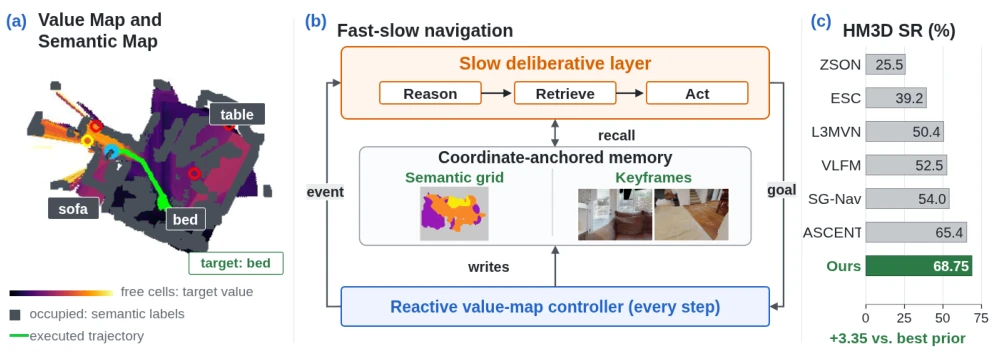
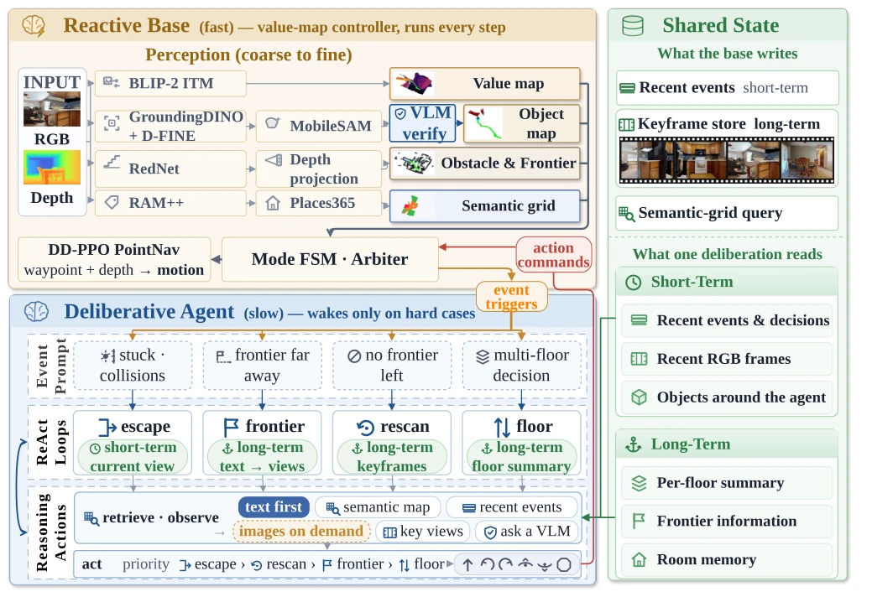
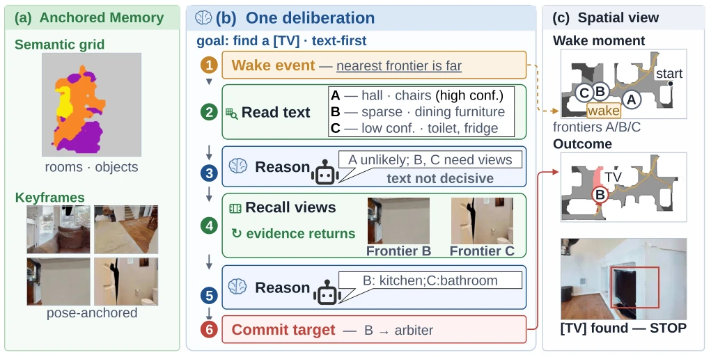
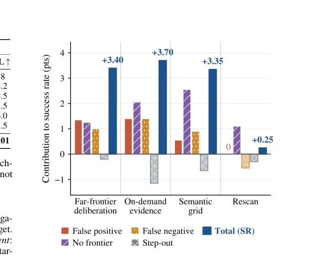
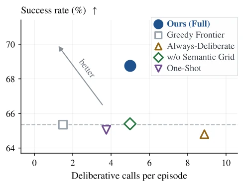

This paper adds a "slow thinking" module to ZSON, effectively providing a "safety net" for reactive navigation. The core is a layered architecture: the fast layer is responsible for continuous execution, while the slow layer handles rescue when stuck. Highlights include "coordinate-anchored memory" and "text-first retrieval," reducing VLM invocation costs. However, the criticisms are obvious: reliance on external VLM APIs, who bears the latency and cost? Moreover, does the definition of "structural dead-end" cover all corner cases? 68% SR looks promising, but under 50% on MP3D indicates complex scenes remain a hard nut to crack. Do not overhype "generalization"; this system performs well in simulation, but real-world deployment depends on VLM response speed. Additionally, although budget control is strict, whether the fallback strategy is sufficiently robust when VLM services fail still requires observation. Overall, this is a pragmatic attempt to move ReAct from the cloud into the robot control loop; although it does not solve all hallucination issues, it provides an explainable decision path.
ZSON requires robots to locate objects in unknown environments; existing mainstream methods (e.g., VLFM, ASCENT) rely on value map argmax to select frontiers, and become stuck once encountering occlusion or dead-ends. Although CogNav and SG-Nav incorporate LLMs, the invocation timing is fixed, preventing re-examination of previously observed scenes. The paper points out that these systems lack a "deliberate" mechanism; once evidence is missed, it is lost. A mechanism is needed that can dynamically decide when to invoke large models and how to retrieve historical evidence, avoiding blind exploration. Existing work often treats large models as black-box schedulers, ignoring local structural obstacles during navigation, leading to entrapment in local optima or dead loops in complex indoor environments.
Overall, it is a hierarchical fast-slow system. The fast layer (Reactive Base) runs at every step, planning based on value maps while simultaneously building coordinate-anchored memory (semantic grid + keyframes). The slow layer (Deliberative Agent) is awakened only upon trigger events (e.g., stuck, distant frontier, floor switch). It adopts a ReAct loop, reasoning based on text memory first, retrieving keyframe images only when text cannot distinguish. Strict budgets are set (call count, image count); on failure, it downgrades back to the fast layer. Innovations lie in the memory structure supporting text-first retrieval, and a "pre-fusion verification gate" filtering erroneous detections. Memory is divided into an abstract layer (room type) and a literal layer (keyframes), ensuring reasoning is based on spatially consistent information. The fast layer continuously writes, the slow layer reads on demand, both coupled via shared state. This design avoids the overhead of invoking large models at every step, while ensuring sufficient context support at key decision points (e.g., dead-ends).

Figure 1: Hierarchical fast–slow navigation at a glance. (a) One HM3D run with bed as the goal: the reactive value-map controller scores free cells by how much the view toward them resembles the goal (colour bar), labels occupied cells as it recognises them, and executes the green trajectory. (b) That controller runs at every step and writes a coordinate-anchored memory—a semantic grid and a store of pose-tagged keyframes. A bounded reason–retrieve–act loop wakes on the structural events the controller reports, recalls what it needs, and returns a new goal. (c) The full system reaches 68.75% SR on HM3D v1 val, the highest among the zero-shot methods we compare.

Figure 2: System architecture. The always-on Reactive Base (top, fast) perceives, maps, and moves at every step and writes the shared state (right)—short-term event context plus the coordinate-anchored memory itself, the semantic grid and the keyframe store. An event-triggered deliberative agent (bottom, slow) wakes only at a structural impasse, reads that memory in a bounded ReAct loop—annotated with the horizon it queries—and returns typed commands under strict budgets. Any deliberative failure degrades back to the Reactive Base, which executes every motion primitive.

Figure 3: One deliberation, end to end, on one HM3D evaluation run (goal: TV, success). (a) Anchored Memory—a semantic grid, tinted by per-cell room type (here hall in orange, kitchen in purple, dining room in yellow, over light grey for space not yet observed), and pose-anchored keyframes—is written by the Reactive Base as it explores and reset at the start of every run. (b) The nearest frontier lies far, so the bounded reason–retrieve–act loop wakes and reads textual memory first. When that round cannot separate frontiers B and C, it retrieves one stored view toward each—remembered, not re-visited—submits those images in a second round, and commits a single typed target. (c) The wake moment in space: trajectory (tan), wake pose, and frontiers A/B/C; B opens onto a kitchen–living area, an
Tested on HM3D v1 and MP3D, with metrics SR and SPL. The full system SR reaches 68.75% (HM3D) and 47.29% (MP3D), surpassing all zero-shot baselines. Ablation experiments show that triggering slow thinking only at structural dead-ends performs better than thinking at every step (Always-Deliberate), the latter even performing worse than the greedy strategy. Absence of the semantic grid leads to a significant performance drop. This proves that "when to call" is more important than "how much to call". Compared to Greedy Frontier, introducing deliberation brings a 3.40 SR point gain. The Rescan mechanism effectively utilizes historical views when the frontier is exhausted. The verification gate filtered 16.7% of erroneous detections. Failure analysis indicates that deliberation mainly reduces false positives and no-frontier stops.

Figure 4: Failure-class decomposition of each ablation gap on HM3D. Each group is one component, measured by the Ta- ble 2 row that takes it away; within a group, the four coloured bars are that component’s contribution in SR points to each failure class and they sum to the blue Total, while bars below zero run the other way. Each component signs the spectrum differently: deliberation spreads its 3.40 points over the three decision-error classes, the semantic grid concentrates 2.55 of its 3.35 in no-frontier stops, and on-demand evidence (3.70) leads on both detection errors.

Figure 5: The gain is not bought with deliberative calls. Always-Deliberate makes the most calls per episode and scores lowest; One-Shot makes fewer than Ours and lands on the dashed line—the Greedy Frontier success rate—as does w/o Semantic Grid, which makes as many calls as Ours. Only the full system, which fires at structural impasses and reads the anchored memory when it does, sits above that line. Up and to the left is better, exact values in Table 2.